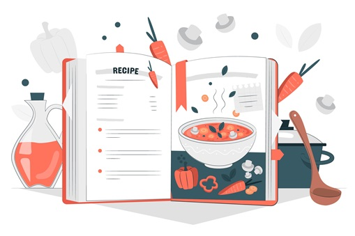

Recipe pages

List of Food Recipes
- Spaghetti
- Chicken Stir Fry
- Classic Margherita Pizza
Spaghetti Recipe
- Ingredients
- - Spaghetti
- - Eggs
- - Pancetta or bacon
- - Parmesan cheese
- - Black pepper
- Instructions
- - Cook spaghetti according to package instructions.
- - In a bowl, whisk eggs with grated Parmesan cheese and black pepper.
- - In a pan, cook pancetta or bacon until crispy.
- - Drain spaghetti and toss with the egg mixture and cooked pancetta. Serve immediately.
Chicken Stir-Fry
- Ingredients
- - Chicken breast, sliced
- - Mixed vegetables (bell peppers, broccoli, carrots)
- - Pancetta or bacon
- - Garlic, minced
- - Ginger, grated
- - Vegetable oil
- Instructions
- - Heat vegetable oil in a pan or wok.
- - Add minced garlic and grated ginger, sauté until fragrant.
- - Add sliced chicken breast, cook until browned.
- - Add mixed vegetables and stir-fry until tender-crisp.
- - Season with soy sauce to taste. Serve over rice.
Classic Margherita Pizza
- Ingredients
- - Pizza dough
- - Tomato sauce
- - Fresh mozzarella cheese
- - Fresh basil leaves
- - Olive oil
- Instructions
- - Preheat oven to 450°F (230°C).
- - Roll out pizza dough on a baking sheet.
- - Spread tomato sauce evenly over the dough.
- - Tear fresh mozzarella cheese and distribute over the sauce.
- - Bake in the preheated oven for about 12-15 minutes, until crust is golden and cheese is bubbly.
- - Remove from oven, top with fresh basil leaves, drizzle with olive oil, and serve.